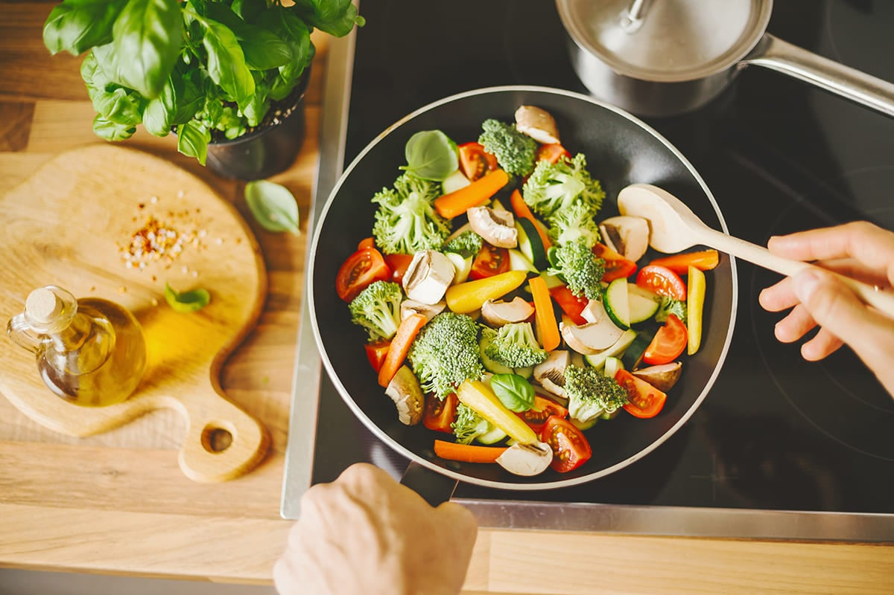
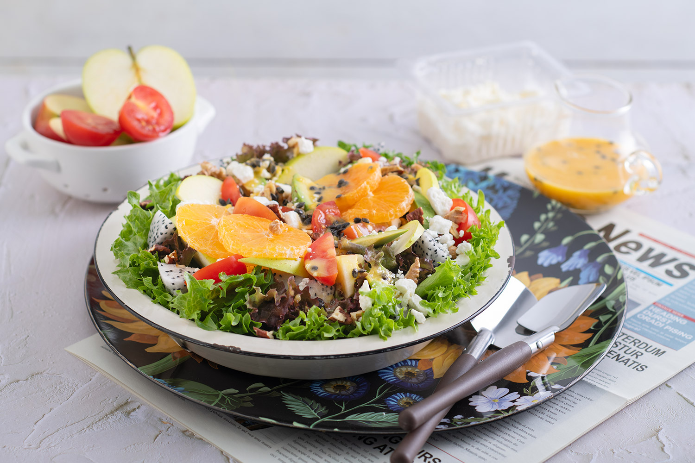
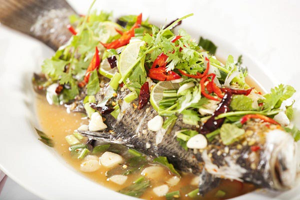

|  |
การทำอาหารคลีน ไม่ได้ยากอย่างที่คิด เพราะไม่จำเป็นต้องใช้วัตถุดิบแพงหรือวิธีซับซ้อน แค่เลือกอาหารธรรมชาติ ลดอาหารแปรรูป และปรุงรสด้วยสมุนไพรหรือเครื่องเทศแทนเกลือและน้ำตาล แค่นี้ก็ได้อาหารอร่อย สุขภาพดี ทำง่ายและปรับให้เข้ากับชีวิตประจำวันได้เลย |
| เมนูแนะนำและวิธีการทำ | |||||
.jpg) |
 |  | |||
วัตถุดิบ วิธีทำ และสมุนไพร ทิ้งไว้สักสิบ นาที
|
วัตถุดิบ เช่น ผักกาด แครอท มะเขือเทศ แตงกวา วิธีทำ น้ำมะนาว เกลือ พริกไทย
|
วัตถุดิบ วิธีทำ
|
|||